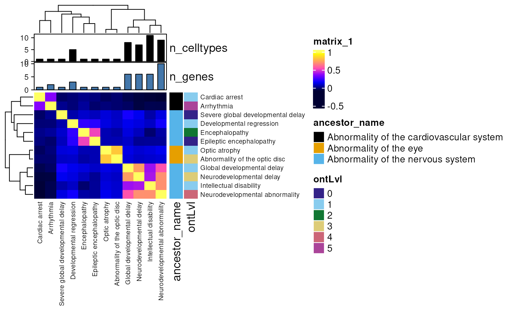

Plot a phenotype x phenotype correlation matrix based on genetic overlap.
correlation_heatmap(
top_targets,
row_side_vars = c("ancestor_name", "ontLvl", "onset_top"),
col_side_vars = c("n_celltypes", "n_genes"),
phenotype_to_genes = HPOExplorer::load_phenotype_to_genes(),
col = pals::gnuplot(),
show_plot = TRUE,
save_plot = tempfile(fileext = "correlation_heatmap.pdf"),
height = 10,
width = height * 1.3,
fontsize = 7,
row_km = 3,
column_km = row_km,
row_km_repeats = 1000,
column_km_repeats = row_km_repeats,
seed = 2023,
interact = FALSE,
verbose = TRUE
)data.table of prioritised targets generated by prioritise_targets.
Variables to include in row-side metadata annotations.
Variables to include in column-side metadata annotations.
Output of load_phenotype_to_genes mapping phenotypes to gene annotations.
A vector of colors if the color mapping is discrete or a color mapping function if the matrix is continuous numbers (should be generated by colorRamp2). If the matrix is continuous, the value can also be a vector of colors so that colors can be interpolated. Pass to ColorMapping. For more details and examples, please refer to https://jokergoo.github.io/ComplexHeatmap-reference/book/a-single-heatmap.html#colors .
Print the plot after generating it.
Path to save plot to.
Height of the heatmap body.
Width of the heatmap body.
Axis labels font size.
Same as km.
K-means clustering on columns.
Number of k-means runs to get a consensus k-means clustering. Note if row_km_repeats is set to more than one, the final number of groups might be smaller than row_km, but this might means the original row_km is not a good choice.
Number of k-means runs to get a consensus k-means clustering. Similar as row_km_repeats.
Set the seed for reproducible clustering.
Make the plot interactive via heatmaply.
Print messages.
Plot
top_targets <- example_targets$top_targets[seq(100),]
hm <- correlation_heatmap(top_targets = top_targets)
#> Constructing HPO gene x phenotype matrix.
#> Reading cached RDS file: phenotype_to_genes.txt
#> + Version: v2023-10-09
#> Annotating gene-disease associations with Evidence score
#> Annotating phenos with Disease
#> Reading cached RDS file: phenotype.hpoa
#> + Version: v2023-10-09
#> Gathering data from GenCC.
#> Importing cached file.
#> + Version: 2023-11-08
#> Computing all parwise correlations.
#> Aggregating results by group_var='hpo_name'/'hpo_id'/'ancestor_name'/'ontLvl'/'onset_top'
#> Loading required namespace: ComplexHeatmap
